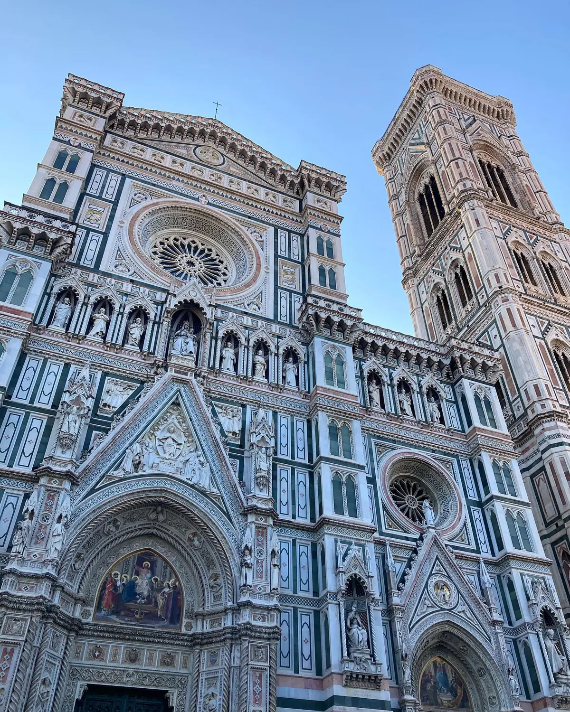
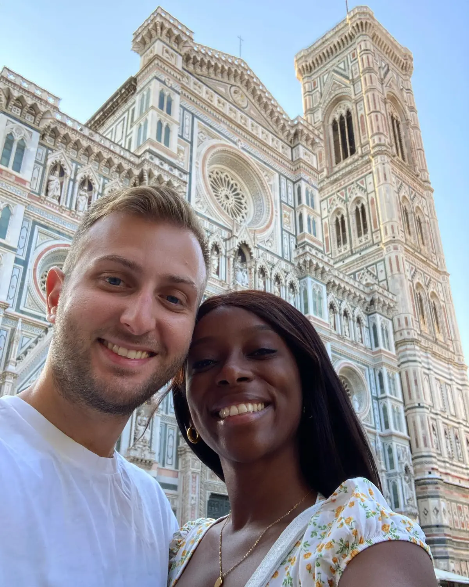
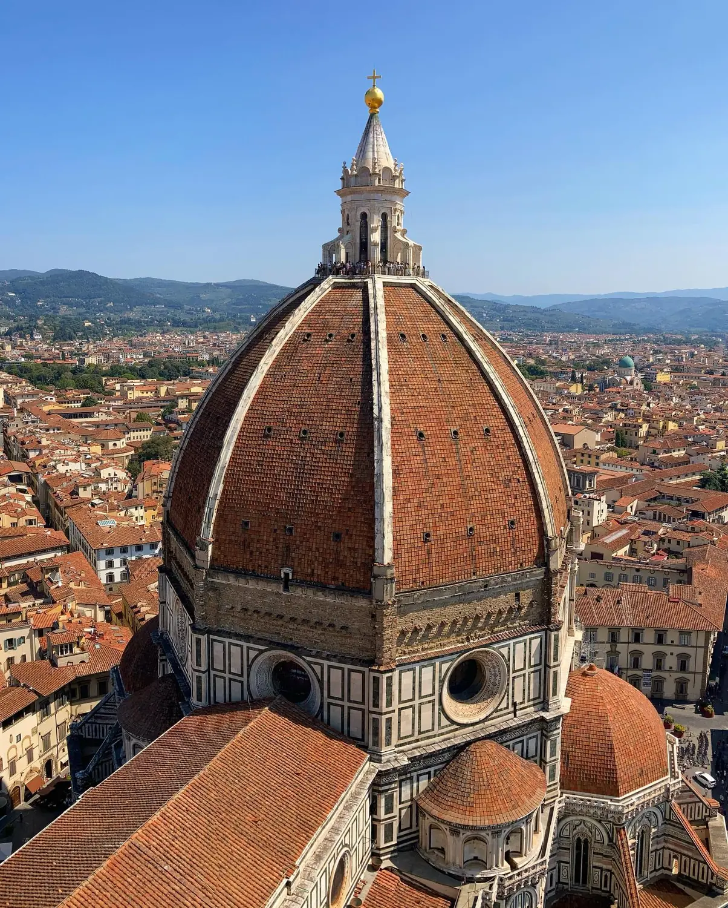

Renaissance icon01
The Duomo — Santa Maria del Fiore
📍 Piazza del Duomo, Florence
Florence's cathedral is jaw-dropping in person — a mountain of pink, green and white marble crowned by Brunelleschi's dome, still the largest brick dome ever built. Book ahead to climb the dome (463 steps) for the city's best view, or take a terrace tour to get up among the marble. Go early; the queues and the heat both build fast.
Climb 463 stepsBook well ahead
GetYourGuide
We'd recommend
Florence: Duomo Skip-the-Line Tour with Rare Terrace Access
Check availability →
GetYourGuide
We'd recommend